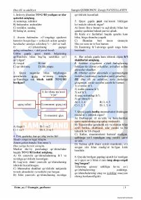

OTOna tili va adabiyot fanidan sertifikat imtihonlari uchun test savollari to'plami.
Ushbu qo'llanma ona tili va adabiyot fanlaridan sertifikat (STM) imtihonlariga tayyorlanish uchun mo'ljallangan test savollari va ularning tahlillarini o'z ichiga oladi. Kitob abituriyentlar va o'qituvchilarga bilimlarini sinash hamda imtihon formatiga ko'nikish imkonini beradi.